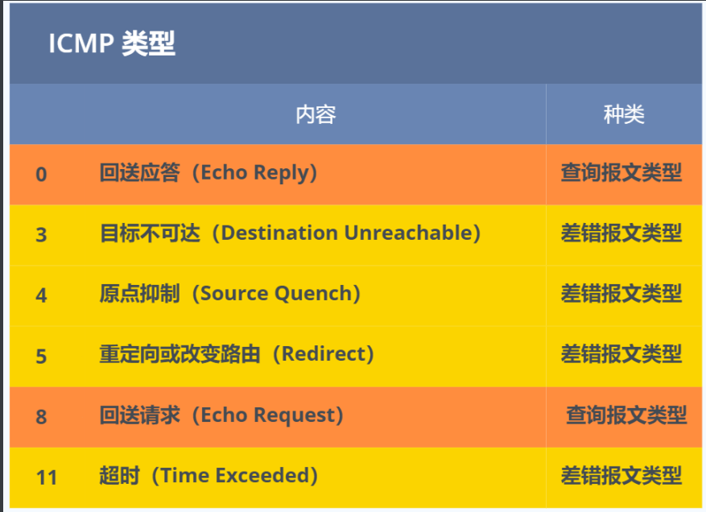

[TCP/IP详解]:ICMP与IGMP
简介
IP协议本身并没有提供直接的方式来发现那些发往目的地址失败的IP数据报，也无法获知它们发送失败的原因，
为了解决这些不足之处，**ICMP(Internet控制报文协议)**被用来与IP层结合使用, 以提供差错诊断以及控制信息
ICMP工作在IP层与传输层之间，它既不是IP协议，也不是传输层协议
1. ICMP
功能
ICMP协议的功能主要有：
- 确认IP包是否成功到达目标地址
- 通知在发送过程中IP包被丢弃的原因
在IPV4中的封装
在IPV4中，协议字段会被置为1， 对应的ICMP报文也被称为ICMPv4
报文头
分类
ICMP报文可以分为两大类:
- ⼀类是⽤于诊断的查询消息，也就是「查询报⽂类型」
- 另⼀类是通知出错原因的错误消息，也就是「差错报⽂类型」
通过报文头的Type字段可以判断报文的类型，配合Code字段可以进行精确的功能判断

2. IGMP
组播
组播允许一台主机发送报文给一组主机，范围比单播要大，比广播要小
IGMP
IGMP与ICMP没有什么关系，是两个完全不同的协议，其全称为互联网组管理协议, 用于管理组播中组的分配，其工作在组播成员以及最
后一跳路由器之间
- IGMP 报⽂向路由器申请加⼊和退出组播组，默认情况下路由器是不会转发组播包到连接中的主机，除⾮主机 通过 IGMP 加⼊到组播组，主机申请加⼊到组播组时，路由器就会记录 IGMP 路由器表，路由器后续就会转发 组播包到对应的主机了
- IGMP 报⽂采⽤ IP 封装，IP 头部的协议号为 2，⽽且 TTL 字段值通常为 1，因为 IGMP 是⼯作在主机与连接 的路由器之间
IGMP 分为了三个版本分别是，IGMPv1、IGMPv2、IGMPv3，接下来，以IGMPv2作为例⼦，说说常规查询与响应和离开组播组这两个⼯作机制
常规查询和响应
路由器会周期性发送⽬的地址为 224.0.0.1 （表示同⼀⽹段内所有主机和路由器） IGMP 常规查询报⽂
主机1 和 主机 3 收到这个查询，随后会启动报告延迟计时器，计时器的时间是随机的，通常是 0~10 秒，
计时器超时后主机就会发送 IGMP成员关系报告报⽂(源 IP 地址为⾃⼰主机的 IP 地址，⽬的 IP 地址为组播 地址), 该报文包含了组的成员信息
如果在定时器超时之前，某个主机收到同⼀个组内的其他主机发送的成员关系报告报⽂，则⾃⼰不再发送，这 样可以减少⽹络中多余的 IGMP 报⽂数
路由器收到主机的成员关系报⽂后，就会在 IGMP 路由表中加⼊该组播组，后续⽹络中⼀旦该组播地址的数据 到达路由器，它会把数据包转发出去
离开组播组⼯作机制
情况1: 主机离开后该组还有其它主机
主机1要离开组 224.1.1.1，发送 IGMPv2 离组报⽂，报⽂的⽬的地址是 224.0.0.2（表示发向⽹段内的所有路 由器）
路由器 收到该报⽂后，以 1 秒为间隔连续发送 IGMP 特定组查询报⽂（共计发送 2 个），以便确认该⽹络是 否还有 224.1.1.1 组的其他成员
主机 3 仍然是组 224.1.1.1 的成员，因此它⽴即响应这个特定组查询。路由器知道该⽹络中仍然存在该组播组 的成员，于是继续向该⽹络转发 224.1.1.1 的组播数据包
情况2: 主机离开之后该组没有别的主机
- 主机 1 要离开组播组 224.1.1.1，发送 IGMP 离组报⽂
- 路由器收到该报⽂后，以 1 秒为间隔连续发送 IGMP 特定组查询报⽂（共计发送 2 个）。此时在该⽹段内，组 224.1.1.1 已经没有其他成员了，因此没有主机响应这个查询
- ⼀定时间后，路由器认为该⽹段中已经没有 224.1.1.1 组播组成员了，将不会再向这个⽹段转发该组播地址的 数据包
本博客所有文章除特别声明外，均采用 CC BY-SA 4.0 协议 ，转载请注明出处！